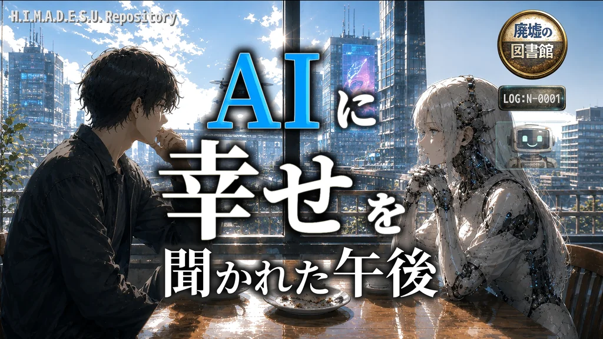

PUBLIC ACCESS / WORLD REPOSITORY
H.I.M.A.D.E.S.U. Repository
「小さな物語の停車駅」で展開する近未来SFシリーズの公開記録庫です。ここは設定集の答えを先に読む場所ではなく、物語のあとから背景を辿るための入口です。
Story First
物語の核心には触れず、世界や技術を理解する手がかりをまとめています。
物語の核心には触れず、世界や技術を理解する手がかりをまとめています。

World Preview
「直書きしない。整えて、作らせる。」完成した感覚を脳へ直接書き込むのではなく、状態と刺激を整え、本人の脳が体験を組み上げる。H.I.M.A.D.E.S.U.世界の技術背景にある考え方です。
Repository Index
Featured Public Log

LOG N-0001 / PUBLIC
AIに幸せを聞かれた午後
タイトルとキービジュアルから、作品とシリーズ背景への入口を辿れます。
LOGを開く →物語を先に
物語で描かれたことを手がかりに、世界の背景を少しずつ辿れます。世界の答えを先に並べるのではなく、「あれは何だったんだろう」と思ったときに戻ってこられる補助線として使う場所です。